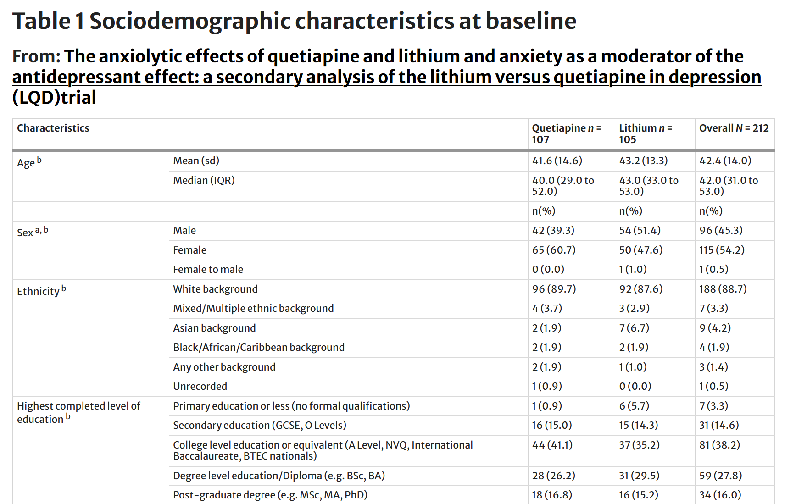
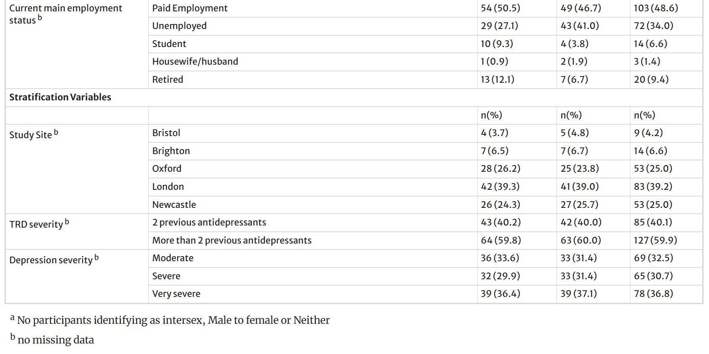
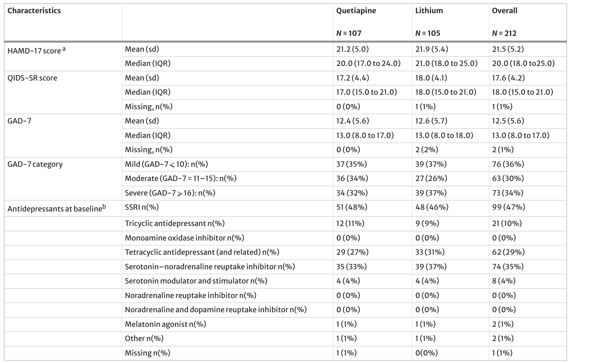

Depression is common, disabling, and costly — driving morbidity, functional impairment, relapse risk, and frequent health-system use.
What brain structure undergoes atrophy as a consequence of chronic depression?
Understanding how each drug interacts with the serotonergic system provides a mechanistic framework for interpreting the study results.
Which shared serotonergic mechanism might explain why both lithium and quetiapine reduce anxiety in TRD patients, as seen in this study?
If both drugs enhance 5-HT1A signaling and have similar anxiolytic effects, what additional mechanisms might explain quetiapine's superior antidepressant effect in patients with severe anxiety?
Based on the title and abstract, what study design would you expect?
What are the advantages and disadvantages of an open-label design for this type of study? How might knowledge of treatment assignment affect outcomes in a depression trial?
Which scale was used as the primary depression outcome measure in this study?
Secondary outcome: Anxiety was assessed at baseline and at weeks 8, 26, and 52.
Key question: Is anxiety a mediator of the antidepressant effects of lithium or quetiapine?
Before we see the results — what is your clinical intuition?
All analyses were conducted as intention to treat (ITT). The statistical analysis plan for this secondary investigation was preregistered on the Open Science Framework (osf.io/dwsry) before the primary author had access to trial data.
Model 1 — Is quetiapine superior at reducing anxiety?
Model 2 — Does baseline anxiety moderate the antidepressant effect?
Model 3 — Does anxiety reduction mediate the antidepressant effect?
This study used the trapezoid rule to calculate AUC of treatment differences. Why is AUC a useful summary measure for comparing two treatments across 52 weeks?
The study found that anxiety moderates but does not mediate the antidepressant effect. What is the difference?
Examining whether randomization produced comparable groups is a critical first step in evaluating any RCT.



Looking at the baseline tables: Are there any clinically meaningful imbalances between groups that could confound the results, even if they are not statistically significant?
Let's make predictions first
Before revealing the results, take 2 minutes to discuss with a partner:
Adherence: No significant differences between groups.
Whole sample: Anxiety scores (GAD-7) reduced from week 0 to week 8 (mean change −2.65 points [SD 4.57], n = 184) but did not markedly change from week 8 to 26 (mean change 0.19 [SD 4.07], n = 147) or 26 to 52 (mean change 0.14 [SD 4.13], n = 119).
Quetiapine vs lithium on GAD-7:
Bottom line: No clinically or statistically significant difference in anxiolytic effect at any time point.
By baseline anxiety subgroup:
The quetiapine advantage is driven primarily by those with severe baseline anxiety. Notably, the AUC in the mild anxiety group is positive (29.7), meaning lithium trended toward being numerically better in this subgroup, though not significantly.
Forest plot of AUC difference in QIDS scores over 52 weeks by baseline anxiety severity
Depression model (QIDS): Three-way interaction Treatment × Baseline Anxiety × Time.
Source: Supplementary Table (Analysis 2), MOESM1
The overall analysis shows quetiapine is superior to lithium (p=0.023), but the subgroup analyses by anxiety severity are not significant. What is the best interpretation?
A patient with TRD and severe comorbid anxiety has failed two adequate antidepressant trials. Based on this study, how would you approach the augmentation decision between quetiapine and lithium? What factors beyond this study would influence your choice?
In an open-label trial using a self-report depression measure, which bias is MOST concerning?
Applicability depends on feasibility (cost, monitoring burden) and patient preferences; population differences can shift benefit and tolerability.
What gaps remain that future research should address? What study design would you want to see to definitively answer the moderation question?
Neither quetiapine nor lithium demonstrated a clear anxiolytic advantage — anxiety scores improved early (by week 8) in both groups and then plateaued.
Over 52 weeks, quetiapine-augmented patients had lower depression symptom burden than lithium-augmented patients (p = 0.023), but this was an open-label trial with self-report outcomes.
The quetiapine advantage appeared driven by patients with severe baseline anxiety. Those with mild-moderate anxiety showed no significant difference.
Open-label design, self-report primary outcome, and potentially underpowered subgroup analyses all warrant moderate confidence in these findings.
A 45-year-old with TRD (failed 3 antidepressants), severe generalized anxiety, BMI 32, and pre-diabetes asks you about augmentation. Based on this study AND clinical judgment, what is your best next step?
Presented by: Emilio Hospedales, MD — PGY-2
PMID: 41762225
Questions? Discussion?